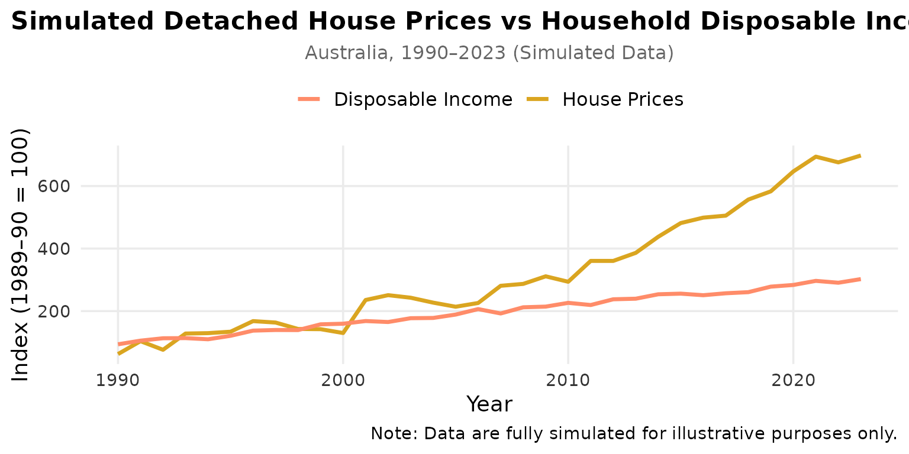

Simulating the Gold in the Ground
simulating-the-gold-in-the-ground.RmdIntroduction
Welcome to the GoldinGroundOz package! This vignette walks through how the package was built and what it aims to demonstrate.
Before we begin, an important reminder:
All data in this package are simulated. They were generated to resemble the general patterns of real-world Australian housing and income trends — but they are not actual figures, and no real economic inference should be drawn from them.
The Idea
The story behind the name Gold in the Ground is simple — Australia’s housing market has long been a fascinating subject, with property prices often growing faster than household income.
Dataset and Variable
To explore this idea visually, we created two small datasets:
- housepr_income: showing detached house prices and household disposable income over 1990–2023, both simulated to move in a realistic long-term pattern.
| Variable | Description |
|---|---|
| year | Year variable (1990–2023) |
| income | Simulated household disposable income index, generated as 100 + (year - 1990) * 6 + ε, with ε ~ N(0, 6). Represents steady income growth with mild yearly variation. |
| house_price | Simulated detached house price index, generated as 100 * exp(0.06 * (year - 1990)) + η, with η ~ N(0, 30). Models exponential price increases and greater volatility after 2000. |
- capital_gain: representing average capital gain rate changes between 1986–2020, with a policy-phase split (“Before” vs. “After” the 50% capital gains discount).
| Variable | Description |
|---|---|
| year | Financial year period formatted as “YYYY-YY” (e.g., “1999-00”). |
| phase | Policy phase: either “Before 50% capital gains discount” or “After 50% capital gains discount”. |
| value | Simulated average capital gain rate (basis points). For the “Before” phase, random values from Uniform(2500, 6000). For the “After” phase, increasing sequence from 7000 to 30000 with added Normal(0, 1200) noise. Negative values truncated to zero. |
Again, both are artificial, designed only to mimic the shape of real-world trends.
Loading the Data
library(GoldinGroundOz)
data("housepr_income")
data("capital_gain")
head(housepr_income)
#> year income house_price
#> 1 1990 93.79697 62.51829
#> 2 1991 105.44149 103.79164
#> 3 1992 113.07616 76.21912
#> 4 1993 113.57105 128.17242
#> 5 1994 109.85777 129.47045
#> 6 1995 120.96476 134.05761
head(capital_gain)
#> year phase value
#> 1 1986-87 Before 50% capital gains discount 5887.859
#> 2 1987-88 Before 50% capital gains discount 2991.685
#> 3 1988-89 Before 50% capital gains discount 3131.357
#> 4 1989-90 Before 50% capital gains discount 3487.970
#> 5 1990-91 Before 50% capital gains discount 2885.084
#> 6 1991-92 Before 50% capital gains discount 5223.711Visualizing

What we see is purely a stylized representation — income grows steadily, while house prices accelerate more strongly after the 2000s. This matches the broad shape of historical data, without using any real numbers.